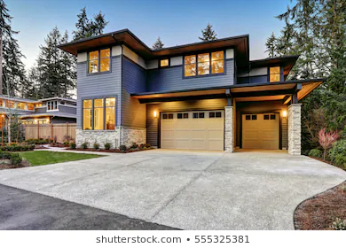

1.中古戸建てとは
中古戸建てとは、過去に人が居住したことがある戸建てのことを指します。入居がない場合でも、新しく建てられてから２年がたった戸建ても中古戸建てとされます。日本は地震が多いことや気候の影響で、欧米と比べると中古戸建ての割合が少ないとも言われています。
2.中古戸建ての魅力
中古戸建ての魅力はいくつかありますが、 大きなメリットを２つを紹介します！
①価格が安い

まず、中古戸建ての1番の魅力は何と言っても価格が安いことでしょう。中古戸建てなら、月々のローンの支払い金額を安く抑えることができるかもしれませんし、新築ではなかなか手が出ない人気のエリアの物件も購入することができるかもしれません！また、新築と比べて圧倒的に物件数が多いため、希望のエリアで、多くの物件の中から選ぶことができる点も魅力的ですね！
②実際の建物を見れる！
